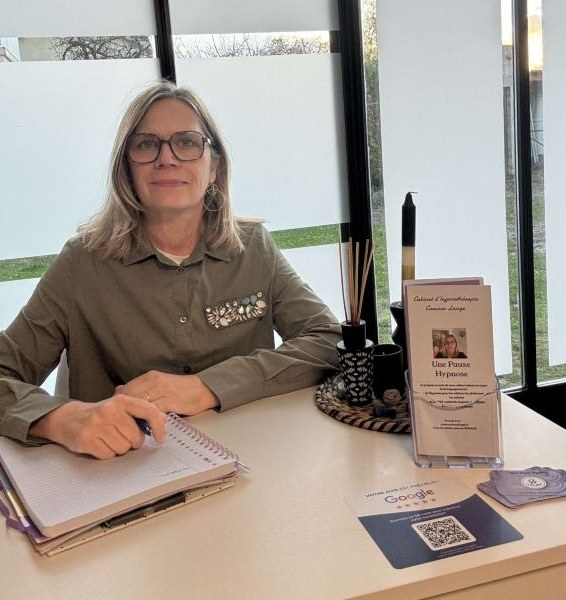
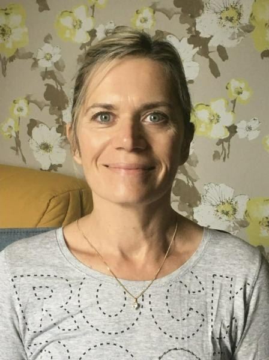

Hypnothérapeute à Châlons-en-Champagne
Votre praticienne en hypnothérapie, à l'écoute de votre histoire
Découvrez un univers où l'hypnothérapie ouvre les portes du mieux-être. J'accompagne enfants, adolescents, adultes et seniors dans mon cabinet « Une Pause Hypnose », et en visio lorsque vous ne pouvez pas vous déplacer facilement.

Une approche personnalisée
Rien n'est immuable. Vous pouvez changer cela.
À l'écoute, disposée à vous proposer ce qu'il y a de mieux pour vous aider, je vous propose une approche personnalisée. J'utilise l'hypnose ericksonienne et/ou humaniste, ainsi que le RITMO dans des situations de psycho-traumatismes. Cette diversité de méthodes permet d'aborder chaque problème sous différents angles, pour une prise en charge complète de vos besoins.
Mon cabinet est un sanctuaire où vos préoccupations et défis personnels trouvent écoute et solutions.
Que vous ayez besoin de dépasser des peurs, des phobies, des blocages émotionnels, des troubles comportementaux, des désagréments physiques ou des souffrances, de lâcher des addictions, de retrouver le sommeil, de mieux gérer le stress, d'optimiser une performance sportive, d'arrêter la cigarette ou d'améliorer vos relations avec vos proches ou au travail…
L'hypnose peut sembler mystérieuse, mais c'est un bon outil pour vous aider dans divers domaines de la vie. Enfant, adolescent, homme ou femme : l'hypnose est pour tout le monde.
Domaines d'intervention
Les prestations
Les pratiques de Corinne Lange
Plusieurs outils complémentaires, choisis et ajustés selon votre histoire, votre personnalité et votre objectif.
Hypnose ericksonienne
Une approche douce et respectueuse, faite de métaphores et de suggestions indirectes, pour accéder à vos propres ressources.
En savoir plus →Hypnose humaniste
Un état de conscience augmenté, sans perte de contrôle, pour traiter l'origine d'un problème et pas seulement son symptôme.
En savoir plus →Thérapie Symbolique Avancée
Technique de l'hypnose humaniste qui travaille avec vos archétypes et vos symboles pour soigner les blessures profondes.
En savoir plus →Programmation neuro-linguistique
Des protocoles précis pour faire évoluer vos comportements et atteindre vos objectifs.
En savoir plus →RITMO
Méthode inspirée de l'EMDR pour accompagner les personnes ayant vécu un événement traumatisant.
En savoir plus →Hypnose transgénérationnelle
Comprendre et libérer ce qui se transmet d'une génération à l'autre, à partir de votre arbre généalogique.
En savoir plus →Hypnose régressive et spirituelle
Revisiter son histoire, en dehors des limites du temps, pour créer un changement intérieur profond.
En savoir plus →Séances en visio
Pour celles et ceux qui ne peuvent pas se déplacer : le même accompagnement, depuis chez vous.
En savoir plus →« Choisissez une étoile, ne la quittez pas des yeux. Elle vous fera avancer loin, sans fatigue et sans peine. »Alexandra David-Néel

L'hypnose thérapeutique
Un outil pour le corps, l'esprit et les émotions
Je pratique l'hypnose thérapeutique. L'hypnose couvre un grand champ d'application. Réduite jusqu'à récemment à sa dimension spectaculaire, elle s'affirme de plus en plus comme un outil incontournable dans le soutien des maladies et des traumatismes.
Ses effets se traduisent aussi bien sur le corps que sur l'esprit ou les émotions : affronter des peurs, dépasser des complexes, lâcher des addictions, surmonter des douleurs ou des insomnies, mieux gérer le stress, optimiser une performance sportive, neutraliser les échecs, arrêter la cigarette, améliorer votre sommeil et vos relations.
L'hypnose vient en complément d'un suivi médical et, le cas échéant, psychologique.
Derniers témoignages
Ils ont fait une séance d'hypnothérapie
« Corinne est une personne tellement douce et gentille, une professionnelle qui sait nous mettre en confiance et nous apaiser. J'étais très à l'aise avec elle, elle fait tout pour cibler le problème exact et sa cause. Je recommande. »
« Une hypnothérapeute très à l'écoute, gentille et douce. On se sent rapidement en confiance avec elle, ce qui permet de lâcher prise facilement. Les séances sont vraiment personnalisées. »
« Une très bonne première expérience en hypnose ericksonienne. Un accueil chaleureux dans un cadre agréable, je recommande. »
Le cabinet
Une Pause Hypnose
61 rue du Quai d'Embarquement
51000 Châlons-en-Champagne
Proche de Saint-Memmie, Fagnières, Mourmelon-le-Grand, Aÿ, Vitry-le-François, Épernay, Cormontreuil, Reims, Sainte-Menehould, Witry-lès-Reims, Tinqueux, Bétheny. Bus 4 ou 7.
Voir sur la carte →Horaires
| Lundi – vendredi | 8h – 12h · 13h30 – 19h |
| Samedi | 8h30 – 12h30 |
| Dimanche | Fermé |
Pensez à prendre rendez-vous avant de vous déplacer.
Rendez-vous
06 75 55 32 14
Tarifs adaptés pour les personnes au chômage, les étudiants et les personnes en difficulté financière.
Réserver en ligne